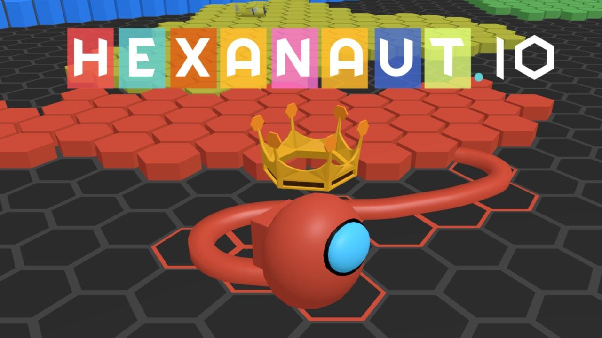
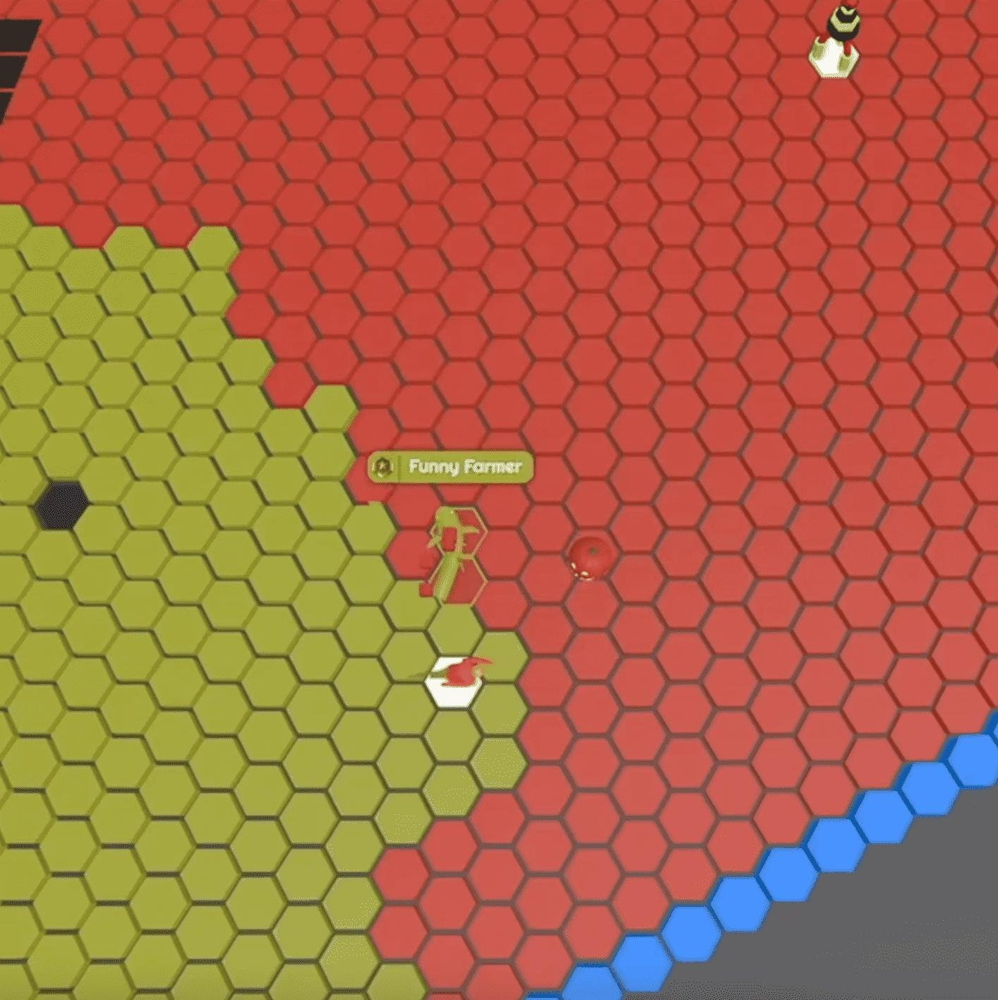

🎯 What Is Hexanaut.io?
Hexanaut.io is a fast-paced 3D multiplayer territory conquest game developed by Exodragon Games (the same studio behind Defly.io). Built on Unity WebGL, the game combines classic snake-style territory capture with hexagonal grid mechanics, creating a strategic battlefield unlike any other .io game.
You control a character with a trailing tail on a hexagonal map. Leave your safe territory, draw a path across the grid, and loop back to claim every hexagon enclosed within your trail. But beware — while you're outside your borders, any opponent who crosses your tail instantly eliminates you.
The ultimate goal: capture 20% of the map to become the Hexanaut King, then hold that territory for 2 minutes to win the match. It sounds simple, but with dozens of players and bots all competing for the same hexagons, every decision matters.

🎮 Controls & Setup
Hexanaut.io keeps controls simple so you can focus on strategy:
| Input | Action |
|---|---|
| Mouse movement | Character aims toward cursor direction |
| WASD / Arrow keys | Alternative movement control |
| Spacebar | Activate items (PRO mode) |
| Touch & drag (mobile) | Full mobile support with virtual joystick option |
Pro tip: Go to Settings to enable "2-key turning" for more precise diagonal movement, or switch to virtual joystick on mobile for smoother control.
🗺️ Territory Capture Mechanics
Understanding territory mechanics is the foundation of Hexanaut.io mastery. Here's how it works:
How Capturing Works
- Start from your territory — You're invincible on your own colored hexagons.
- Leave your borders — Your character leaves a visible trail (tail) behind you.
- Draw a path — Move across unclaimed or enemy territory in any shape you want.
- Close the loop — Return to your own territory to capture all hexagons enclosed by your path.
Key Rules
- Safe zone: You cannot be eliminated while on your own territory.
- Vulnerable outside: If any opponent touches your tail while you're outside your borders, you die instantly and restart.
- Head-on collisions: If two players collide head-to-head outside both territories, both are eliminated.
- Cutting enemies: Touch an opponent's tail while they're outside their territory to eliminate them.

🔮 The 5 Totems — Your Tactical Arsenal
Totems are scattered across the map and provide game-changing buffs when captured. Knowing when and how to use each totem is what separates beginners from champions.
⚡ Speed Totem
Increases movement speed by 5%. The key word is stackable — grab 3-4 Speed Totems and you'll be dramatically faster than opponents. Prioritize these in every match.
🌐 Spreading Totem
The only totem that directly grants hexagons. Once captured, it fires lasers that automatically capture nearby tiles one by one. Essential in the early game when territory is scarce.
🚪 Teleport Gate
Instantly transport between gates on your territory. Use these to defend distant borders or set up surprise attacks on enemies near your edges. Game-changer for large territories.
🕸️ Slowing Totem
Creates a zone that dramatically slows any enemy who enters. Think of it as a spider web trap. Place these near your territory borders to catch aggressive opponents off guard.
🕵️ Spy Dish
Reveals all opponent territories on your minimap. Becomes critical mid-to-late game when you need to see where enemies are attacking your borders. Full map awareness = survival.
🏟️ Game Modes
Hexanaut.io offers three distinct modes to match your playstyle:
FFA (Free-For-All)
The classic every-player-for-themselves mode. All out, all the time. Perfect for learning the basics and practicing territory strategies. Last Hexanaut standing wins.
DUO Mode
Team up with a partner to coordinate territory captures and defend each other's borders. Communication and positioning become critical — one player can expand while the other defends.
PRO FFA (Advanced)
The ultimate challenge. PRO mode adds airdropped combat items that completely change the game:
| Item | Effect |
|---|---|
| 🔫 Cannon | Fire bullets that slice through opponent heads from distance |
| ✂️ Scissors | Launch projectiles to cut enemy tails remotely |
| 💣 Capture Grenade | Instantly claim territory in an area with explosive capture |
| ⚡ Speed Cell | Temporary massive speed burst for escapes or aggression |
| 🧱 Brick Wall | Deploy impassable barriers to trap or protect territory |
| 🛡️ Shield | Become invincible against all collisions and tail cuts |
| 🌿 Capture Rake | Dramatically increase territory gain per movement step |
👑 The King Victory — Your Path to Winning
The King mechanic is what makes Hexanaut.io unique among territory-capture .io games. Here's the complete victory path:
Phase 1: Early Game Expansion (0-20% Territory)
- Start by capturing small, safe loops near your spawn area.
- Grab the Spreading Totem immediately — it auto-captures hexagons for you.
- Prioritize Speed Totems — even 5% adds up fast when stacked.
- Expand slowly and methodically. Don't take risks early.
Phase 2: Becoming the King (20% Territory)
- Once you hit 20% map control, you become the Hexanaut King.
- You receive a speed bonus and full minimap visibility.
- ⚠️ All other players now know your exact position and will target you.
- If you die while another player is King, you cannot respawn.
Phase 3: Defending the Crown (Hold 2 Minutes)
- Use Teleport Gates to quickly defend borders under attack.
- Place Slowing Totems near your territory edges as traps.
- Grab the Spy Dish for full enemy position awareness.
- Use Shield (PRO mode) for critical moments when you need risky territory grabs.
- Play defensively — losing your King status is devastating.
💡 Pro Strategies & Tips
🐍 Small Loops First
Always start with small, safe captures. Short trails mean less exposure time. Only attempt large loops when you have Speed Totems or Shield active.
👀 Watch Your Borders
Enemies love to sneak along your territory edges and cut your tail as you return from a capture. Always scan your border before closing a loop.
⚡ Stack Speed Early
Speed is king. Grab every Speed Totem you can — the 5% boost compounds. With 3-4 totems, you'll outrun almost everyone and escape dangerous situations easily.
🚪 Teleport Defensively
When you have a large territory, use Teleport Gates to rush to borders under attack. Enemies expect you to be far away — surprise them.
🕸️ Trap Zones
Set up Slowing Totems in chokepoints near your territory. When enemies enter the slow zone, circle around and eliminate them at reduced speed.
🛡️ Save Shield for Key Moments
In PRO mode, don't waste Shield on routine captures. Save it for critical late-game territory grabs or when you need to close a large, risky loop.
🏆 Ranking System
Hexanaut.io features a competitive ranking system with XP-based progression through multiple tiers:
| Rank | Tier | Difficulty |
|---|---|---|
| 🥉 Copper | Starting rank | Beginner |
| 🥉 Bronze | Learning basics | Easy |
| 🥈 Silver | Developing strategy | Moderate |
| 🥈 Gold | Consistent performer | Challenging |
| 💎 Platinum | Advanced tactics | Hard |
| 💎 Diamond | Expert level | Very Hard |
| ⭐ Master | Elite player | Extreme |
| 👑 Grandmaster | Top of the ladder | Legendary |
Win matches, eliminate opponents, and capture territory to earn XP and climb the ranks. Each tier unlocks new challenges and more skilled opponents.
❌ Common Mistakes to Avoid
- Overextending early — Large loops with long trails are tempting but deadly. Build up safely first.
- Ignoring defense — Capturing new territory is exciting, but enemies are always looking to cut your tail. Balance offense and defense.
- Wasting totems — Don't grab a Speed Totem just because it's there. Plan your route to maximize each totem's effect.
- Panicking as King — Once you become King, don't rush to expand more. Focus on holding what you have and defending borders.
- Ignoring the shrinking arena — The map shrinks over time, forcing confrontation. Move toward center early instead of getting trapped at the edge.
- Forgetting the Spy Dish — Without map visibility, you're flying blind in the late game. Always prioritize Spy Dish when expanding large territories.
❓ Frequently Asked Questions
How do you win in Hexanaut.io?
Capture at least 20% of the total map to become the Hexanaut King. Once you achieve King status, you must maintain that territory level for 2 full minutes. If you succeed, you win the match!
What happens if I die while someone else is King?
You cannot respawn. If another player holds the King title when you're eliminated, you're out of the match permanently. This makes King battles incredibly high-stakes.
What are the 5 totems?
Speed Totem (+5% movement speed, stackable), Spreading Totem (auto-captures nearby hexagons), Teleport Gate (instant travel across your territory), Slowing Totem (creates a zone that slows enemies), and Spy Dish (reveals all territories on minimap).
Is Hexanaut.io free?
Yes! Hexanaut.io is completely free to play in your web browser. No downloads, no sign-ups required. Just visit hexanaut.io and start playing.
Can I play Hexanaut.io on mobile?
Absolutely. The game is fully optimized for mobile with touch controls. You can also enable the virtual joystick option in Settings for more precise movement.
What's the difference between FFA and PRO FFA?
PRO FFA adds combat items delivered via airdrops: Cannon, Scissors, Capture Grenade, Speed Cell, Brick Wall, Shield, and Capture Rake. These items add explosive combat variety to the standard territory gameplay.
Who made Hexanaut.io?
Hexanaut.io was developed by Exodragon Games, the same studio behind Defly.io. They specialize in multiplayer .io browser games with 3D graphics.
How long does a typical match last?
Most matches last 5-10 minutes. However, highly skilled players can achieve King victory in under 3 minutes with aggressive early expansion. The shrinking arena ensures matches don't drag on.
🎮 Similar Games You Might Enjoy
If you love Hexanaut.io's territory capture gameplay, check out these related .io games on our site:
- Paper.io Guide — The classic square-grid territory capture game that inspired Hexanaut
- Splix.io Guide — Paint territory and defend your tail in this fast-paced alternative
- Defly.io Guide — Also by Exodragon Games, featuring aerial combat with territory mechanics
- Slither.io Guide — The classic snake game with similar tail-dodging mechanics